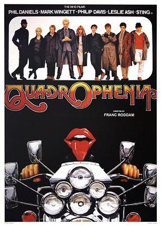

Quadrophenia

Franc Roddam
1979
117 minutes
Wikipedia link
IMDB link
TV Tropes link
This is text.
Time to choose something different:
- I do love a good coming of age story! - Turn to section 231
- Young people need healthier hobbies than mopeds and drugs. Why not try wrestling or ice skating? - Turn to section 183
- Sometimes it's better to keep troublesome teenagers close to home so they stay out of trouble! - Turn to section 219